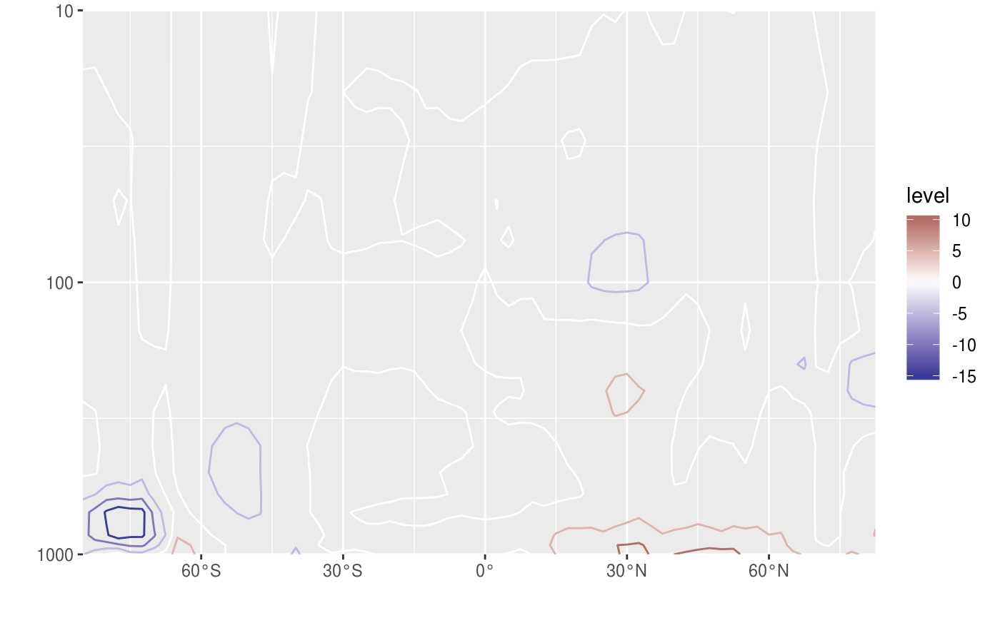
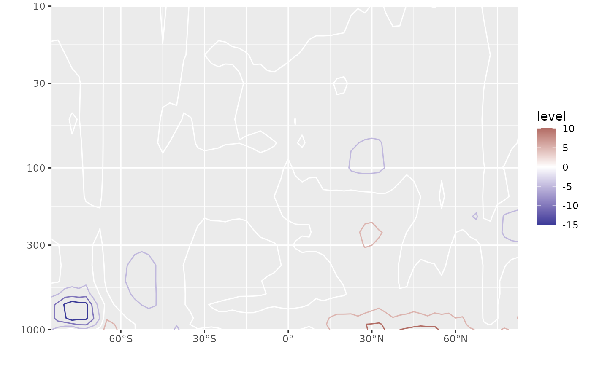

Creates a mask
MaskLand(lon, lat, mask = "world", wrap = c(0, 360))
| lon | a vector of longitudes in degrees in 0-360 format |
|---|---|
| lat | a vector of latitudes in degrees |
| mask | the name of the dataset (that will be load with
|
| wrap | the longitude range to be used for a global mask |
A logical vector of the same length as lat and lon where TRUE means
that the point is inside one of the polygons making up the map. For a global
map (the default), this means that the point is over land.
# Make a sea-land mask mask <- temperature[lev == 1000, .(lon = lon, lat = lat, land = MaskLand(lon, lat))] temperature <- temperature[mask, on = c("lon", "lat")] # Take the temperature difference between land and ocean diftemp <- temperature[, .(tempdif = mean(air[land == TRUE]) - mean(air[land == FALSE])), by = .(lat, lev)] library(ggplot2) ggplot(diftemp, aes(lat, lev)) + geom_contour(aes(z = tempdif, color = ..level..)) + scale_y_level() + scale_x_latitude() + scale_color_divergent()#> Warning: Removed 136 rows containing non-finite values (stat_contour).# Mean temperature in the USA usatemp <- temperature[, usa := MaskLand(lon, lat, mask = "usa")][ , .(air = weighted.mean(air, cos(lat*pi/180))), by = .(usa, lev)][ usa == TRUE] ggplot(usatemp, aes(lev, air)) + geom_line() + scale_x_level() + coord_flip()